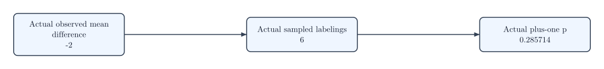
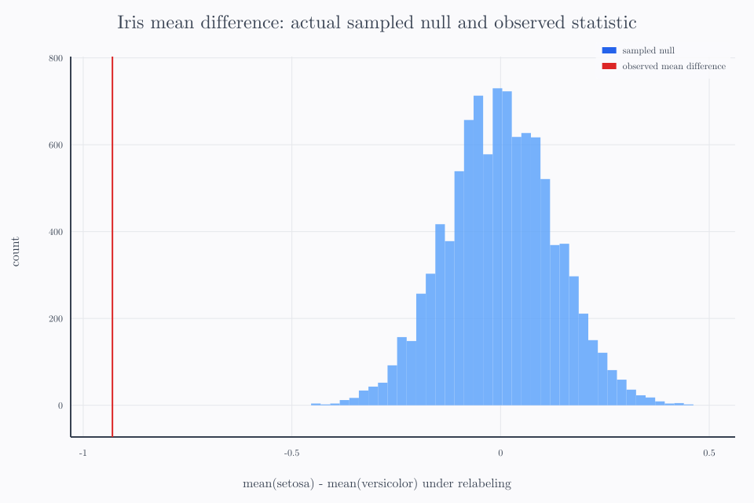
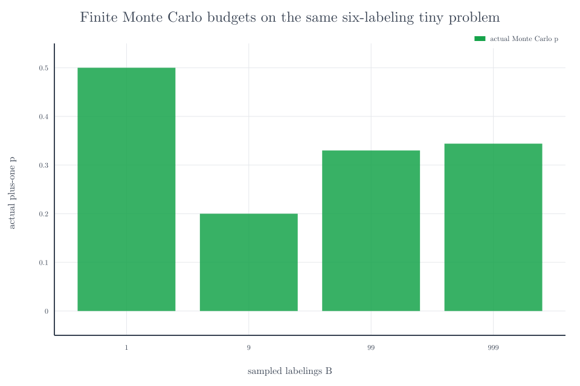
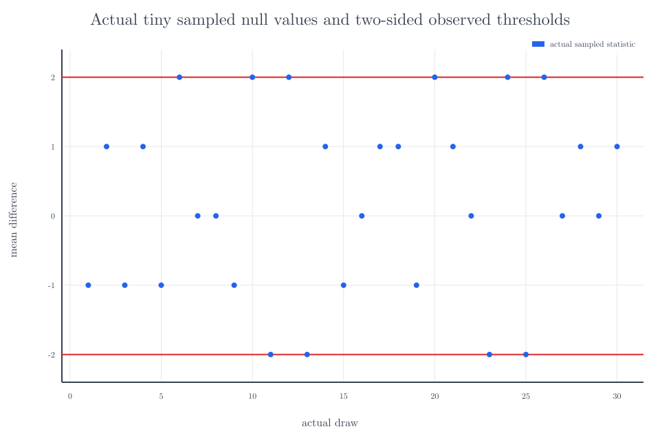

Permutation tests: actual sampled label assignments
Abstract
Under exchangeability, pooled row labels can be reassigned while preserving group sizes. The native test repeatedly shuffles pooled row identities and recomputes the chosen statistic. It samples labelings with replacement; it does not enumerate the exact finite null. Tail comparisons include ties, and the Monte Carlo p-value is(1+extreme)/(B+1). Uniform exchangeability is an assumption about design or the null, not a consequence of a small p-value. The original Iris setosa/versicolor Sepal.Length study is retained, for both means and medians. A median statistic has a permutation distribution too; the original claim that no analytic null exists in any setting was too broad.
Mechanism and scope
Under exchangeability, pooled row labels can be reassigned while preserving group sizes. The native test repeatedly shuffles pooled row identities and recomputes the chosen statistic. It samples labelings with replacement; it does not enumerate the exact finite null. Tail comparisons include ties, and the Monte Carlo p-value is(1+extreme)/(B+1). Uniform exchangeability is an assumption about design or the null, not a consequence of a small p-value. The original Iris setosa/versicolor Sepal.Length study is retained, for both means and medians. A median statistic has a permutation distribution too; the original claim that no analytic null exists in any setting was too broad.
This is the native two-sided definition. For the tiny two-plus-two distinct observations there are six label sets and two have absolute mean difference two, so the exact two-sided label-set probability is1/3. A finite Monte Carlo estimate need not equal it or improve monotonically with B.
A tiny actual producing history
The table and native diagram use the same producing run. Captured records own their values; the report does not reconstruct the algorithm.
#include <dm/dm.hpp>
int main() {
std::filesystem::create_directories("build");
auto t =
dm::stats::permutation_test_trace({1, 2}, {3, 4}, {},
{6, dm::stats::Alternative::TwoSided,
42});
std::print("| draw | actual first-group pooled ids | statistic | extreme |\n| ---: | --- | ---: | --- " "|\n");
for (std::size_t i = 0; i < t.draws.size(); ++i) {
auto &r = t.draws[i];
std::print("| {} | `{}` | {} | {} |\n", i, r.first_group, r.statistic,
r.extreme);
}
dm::graphics::Diagram d;
d.node("n0", {0, 0},
std::format("Actual observed mean difference\n{}", t.result.observed));
d.node("n1", {8, 0},
std::format("Actual sampled labelings\n{}", t.draws.size()));
d.node("n2", {16, 0},
std::format("Actual plus-one p\n{:.6f}", t.result.p_value));
d.edge("n0", "n1").edge("n1", "n2");
d.save_svg("build/permutation_tiny.svg");
}| draw | actual first-group pooled ids | statistic | extreme |
|---|---|---|---|
| 0 | [0, 2] | -1 | false |
| 1 | [1, 3] | 1 | false |
| 2 | [0, 2] | -1 | false |
| 3 | [3, 1] | 1 | false |
| 4 | [0, 2] | -1 | false |
| 5 | [2, 3] | 2 | true |

The original fixture, retained
This complete program retains the original inputs, seed and substantive experiment. Any added display prefix is explicitly separate from the original random call schedule.
#include <dm/dm.hpp>
using namespace datamunge::stats;
using namespace datamunge::graphics;
static double mean_of(const std::vector<double> &v) {
return std::accumulate(v.begin(), v.end(), 0.0) / static_cast<double>(
v.size());
}
static double median_of(std::vector<double> v) {
std::sort(v.begin(), v.end());
const std::size_t n = v.size();
return n % 2 ? v[n / 2] : 0.5 * (v[n / 2 - 1] + v[n / 2]);
}
int main() {
std::ostringstream original_output;
auto *original_cout = std::cout.rdbuf(original_output.rdbuf());
std::filesystem::create_directories("build");
std::cout << std::fixed << std::setprecision(4);
const auto iris = datamunge::datasets::iris();
std::vector<double> setosa, versicolor;
for (std::size_t i = 0; i < iris.nrows(); ++i) {
const std::string sp = iris.string_at("Species", i);
const double v = iris.double_at("Sepal.Length", i);
if (sp == "setosa")
setosa.push_back(v);
else if (sp == "versicolor")
versicolor.push_back(v);
}
std::cout <<
"=== Two-sample permutation test: setosa vs versicolor Sepal.Length ===\n";
std::cout << "setosa mean = " << mean_of(setosa) << " (n=" <<
setosa.size() << "), versicolor mean = " << mean_of(versicolor) <<
" (n=" << versicolor.size() << ")\n";
PermutationTestOptions opt{10000, Alternative::TwoSided, 20240915};
const auto diff_means =
permutation_test_two_sample(setosa, versicolor, {}, opt);
std::cout << "\ndifference in MEANS:\n";
std::cout << " observed = " << diff_means.observed << "\n";
std::cout << " permutation p = " << diff_means.p_value << " (" <<
opt.num_permutations << " permutations)\n";
std::cout << " null mean/sd = " << diff_means.null_mean << " / " <<
diff_means.null_sd << "\n";
const auto tt = t_test_two_sample(setosa, versicolor);
std::cout << " Welch t-test p = " << tt.p_value << " (for comparison)\n";
const TwoSampleStatistic diff_median =
[](const std::vector<double> & a, const std::vector<double> & b) {
return median_of(a) - median_of(b);
};
const auto dm =
permutation_test_two_sample(setosa, versicolor, diff_median, opt);
std::cout <<
"\ndifference in MEDIANS (median statistic under sampled relabeling):\n";
std::cout << " observed = " << dm.observed << "\n";
std::cout << " permutation p = " << dm.p_value << "\n";
auto plot =
RPlot::hist(diff_means.null_distribution, 40, "permutation null");
plot.title("Permutation null distribution of the mean difference (setosa vs versicolor)").x_label("mean(setosa) - mean(versicolor) under relabeling").y_label("count").background({250, 250, 252});
plot.abline_v(diff_means.observed, {220, 38, 38}, 2);
plot.x_limits(std::min(diff_means.observed,
*std::min_element(diff_means.null_distribution.begin(),
diff_means.null_distribution.end())) -
.1,
*std::max_element(diff_means.null_distribution.begin(),
diff_means.null_distribution.end()) + .1);
plot.title("Iris mean difference: actual sampled null and observed statistic");
plot.legend({"sampled null", "observed mean difference"},
{{37, 99, 235}, {220, 38, 38}});
plot.save_svg("build/permutation_original.svg");
std::cout << "\nobserved difference " << diff_means.observed <<
" compared with the actually sampled null range [" <<
*std::min_element(diff_means.null_distribution.begin(),
diff_means.null_distribution.end()) << ", " <<
*std::max_element(diff_means.null_distribution.begin(),
diff_means.null_distribution.end()) <<
"]\nwrote permutation_null.svg\n";
std::cout.rdbuf(original_cout);
std::print("| Original computed output |\n| --- |\n");
std::istringstream lines(original_output.str());
std::string line;
while (std::getline(lines, line)) {
while (!line.empty() && line.back() == ' ') line.pop_back();
if (!line.empty()) std::print("| `{}` |\n", line);
}
return 0;
}| Original computed output |
|---|
=== Two-sample permutation test: setosa vs versicolor Sepal.Length === |
setosa mean = 5.0060 (n=50), versicolor mean = 5.9360 (n=50) |
difference in MEANS: |
observed = -0.9300 |
permutation p = 0.0001 (10000 permutations) |
null mean/sd = -0.0001 / 0.1289 |
Welch t-test p = 0.0000 (for comparison) |
difference in MEDIANS (median statistic under sampled relabeling): |
observed = -0.9000 |
permutation p = 0.0001 |
observed difference -0.9300 compared with the actually sampled null range [-0.4540, 0.4620] |
wrote permutation_null.svg |

Controls and boundary cases
#include <dm/dm.hpp>
int main() {
std::filesystem::create_directories("build");
std::vector<double> v;
std::vector<std::string> labels;
std::print("| B | actual observed | actual p | sampled null SD |\n| ---: | ---: | ---: | ---: |\n");
for (std::size_t count : {1, 9, 99, 999}) {
auto r =
dm::stats::permutation_test_two_sample({1, 2}, {3, 4}, {},
{count,
dm::stats::Alternative::TwoSided,
42});
labels.push_back(std::to_string(count));
v.push_back(r.p_value);
std::print("| {} | {} | {} | {} |\n", count, r.observed, r.p_value,
r.null_sd);
}
auto p = dm::graphics::RPlot::barplot(v, labels, "actual Monte Carlo p");
p.title("Finite Monte Carlo budgets on the same six-labeling tiny problem").x_label("sampled labelings B").y_label("actual plus-one p");
p.save_svg("build/permutation_controls.svg");
}| B | actual observed | actual p | sampled null SD |
|---|---|---|---|
| 1 | -2 | 0.5 | 0 |
| 9 | -2 | 0.2 | 1.118033988749895 |
| 99 | -2 | 0.33 | 1.3282990923222793 |
| 999 | -2 | 0.344 | 1.3095592412442367 |

Producing work and finite observations
#include <dm/dm.hpp>
int main() {
std::filesystem::create_directories("build");
auto t =
dm::stats::permutation_test_trace({1, 2}, {3, 4}, {},
{30, dm::stats::Alternative::TwoSided,
42});
std::vector<double> x, y;
std::print("| draw | actual statistic | actual extreme decision |\n| ---: | ---: | --- |\n");
for (std::size_t i = 0; i < t.draws.size(); ++i) {
x.push_back(i + 1);
y.push_back(t.draws[i].statistic);
std::print("| {} | {} | {} |\n", i + 1, y.back(), t.draws[i].extreme);
}
auto p = dm::graphics::RPlot::create();
p.points(x, y, "actual sampled statistic", {37, 99, 235}, 4).abline_h(
t.result.observed, {220, 38, 38}, 2).abline_h(-t.result.observed,
{220, 38, 38}, 2).title(
"Actual tiny sampled null values and two-sided observed thresholds").x_label("actual draw").y_label("mean difference");
p.save_svg("build/permutation_work.svg");
}| draw | actual statistic | actual extreme decision |
|---|---|---|
| 1 | -1 | false |
| 2 | 1 | false |
| 3 | -1 | false |
| 4 | 1 | false |
| 5 | -1 | false |
| 6 | 2 | true |
| 7 | 0 | false |
| 8 | 0 | false |
| 9 | -1 | false |
| 10 | 2 | true |
| 11 | -2 | true |
| 12 | 2 | true |
| 13 | -2 | true |
| 14 | 1 | false |
| 15 | -1 | false |
| 16 | 0 | false |
| 17 | 1 | false |
| 18 | 1 | false |
| 19 | -1 | false |
| 20 | 2 | true |
| 21 | 1 | false |
| 22 | 0 | false |
| 23 | -2 | true |
| 24 | 2 | true |
| 25 | -2 | true |
| 26 | 2 | true |
| 27 | 0 | false |
| 28 | 1 | false |
| 29 | 0 | false |
| 30 | 1 | false |

API and interpretation
All four blocks are complete editable C++ programs. Numerical tables retain raw native values; figures display only those returned records. Trace limits count documented logical records or scalar entries, not peak bytes or wall-clock work. Validation is complete before unchecked indexing; captured histories are educational owned storage. A returned result is interpreted under the algorithm-specific scope above, without a universal optimality, convergence or statistical-quality claim.
Phipson and Smyth discuss the nonzero Monte Carlo correction. The reported sample is not exhaustive enumeration.
Verification
This ten-report batch passes 89 CTest cases, 20 ASan/UBSan cases with all ten
producing families directly instrumented, 62 compiled and executed public
examples, 200/200 scoped file definitions plus 15/15 exact PCG class
definitions, and ten representative clangd hovers. Independent Python
hashlib/HMAC and arbitrary-integer PCG checks verify 75189 records with 123243
checks. Native independent per-pixel visibility, exhaustive prefix reversals,
quadratic LIS, integer perceptron updates, sampled-label tail counts and
exhaustive Boolean-cover checks supplement frozen valid-input comparisons for
all ten producers. Ten checkout and ten byte-identical installed development
headers compile independently; an installed-header native consumer links and
runs. All 40 complete programs execute; all 40 native figures have been visually
reviewed. HTML/Markdown exports preserve computed result rows and identical
image bytes. These are scoped native checks. Receipts:
build/mepml-conversion/batch-274-283/.